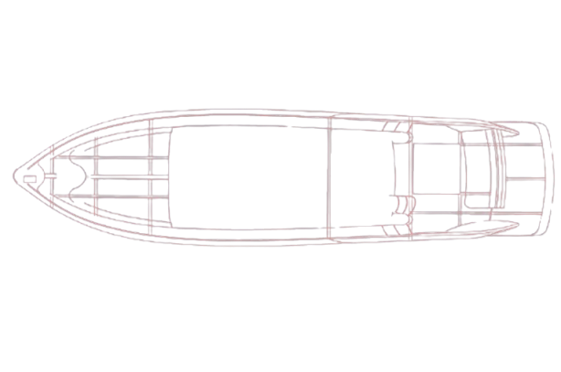

PRESENTACIÓN COMERCIAL · SEPTIEMBRE 2026
Gestión integral
para astilleros
Una misma operación, desde la primera tarea de una obra hasta el servicio al propietario.

EL PROBLEMA
Cuatro preguntas de todos los días
Entre producción, compras y pañol, una misma unidad genera preguntas que cambian de manos.
EL SISTEMA
El recorrido de una obra
La planificación, la compra y el movimiento físico comparten la misma referencia de obra.
- 01Plan de producción y tareas
- 02Matriz de materiales del modelo
- 03Solicitud y gestión de compras
- 04Aviso y recepción en pañol
- 05Stock, transferencia y egreso
- 06Entrega, cliente y postventa
UNA OBRA COMO REFERENCIA
ESCALA OPERATIVA
Cuando hay decenas de movimientos por día
Cada ingreso, retiro, traspaso o ajuste necesita contexto. El historial conserva material, cantidad, fecha, obra y responsable.
80 × 22 días hábiles = 1.760 registros al mes
No es una medición de uso real ni una promesa de capacidad.
Probá el volumen de tu propio astillero. El dato real se confirma en una reunión de diagnóstico.
ESCALA OPERATIVA
Un movimiento contado de principio a fin
Un producto llega, se recibe, queda disponible y sale hacia una obra. Cada cambio deja una huella distinta.
Ejemplo: bomba de achique para una unidad ficticia. Una compra o un aviso no cuentan como stock: el ingreso se registra al confirmar la recepción física.
PRODUCCIÓN
Obras y cronograma
La obra reúne etapas, tareas, fechas relativas al desmolde, responsables y señales de atraso.
01El avance se consulta por barco y por etapa.
02La lista de trabajo cambia según el punto de la obra.
03Los archivos quedan junto a la tarea.
PRODUCCIÓN
Laminación, madera y piezas
Cada sector puede trabajar con su propio detalle sin perder el vínculo con el barco.
Laminación por sede y por obra, con plantillas de proceso.
Maderas: entradas, existencias y movimientos del material.
Piezas de laminación asociadas a producción y seguimiento.
MATERIALES
Lo que necesita el modelo, lo que necesita esta obra
La matriz del modelo se fija al iniciar cada obra. Los adicionales y decisiones del cliente quedan ligados a esa unidad.
Matriz de modelo
Lista base de materiales
Se reutiliza en obras nuevas
Puede evolucionar para el próximo barco
Materiales de obra
Copia estable para esa unidad
Adicionales y condicionantes
Pedido, recepción y entrega vinculados
ABASTECIMIENTO
Compras con contexto de obra
Cada pedido tiene estado, prioridad y vínculo con la unidad que lo necesita.
01Bandeja de urgentes, nuevos y cotizaciones.
02Seguimiento de lo comprado pendiente de recibir.
03Pedidos por obra y consulta por proveedor.
ABASTECIMIENTO
Planificar compras por etapa
Las plantillas ordenan qué se compra y cuándo. La vista por obra permite trabajar cada tanda con proveedores.
Plantillas para repetir decisiones de compra entre obras similares.
Vista por obra y por proveedor para agrupar necesidades.
Semáforo de riesgo como vista de seguimiento en evolución.
PAÑOL
Recepción y stock físico
El pañol confirma cantidades e incidencias antes de que el material figure disponible.
01Existencias por sede, rubro y ubicación.
02Mínimos de reposición y señales a revisar.
03Traspasos y conteos con historial.
PAÑOL
Historial de movimientos
Una salida puede consultarse por producto, obra, persona y fecha. Las devoluciones y la estandarización tienen su propio recorrido.
01Ingresos y egresos con signo y responsable.
02Egresos vinculados a obra y sector.
03Escáner, solicitudes y NFC según el puesto.
TALLERES
Muebles, tornería y marmolería
Los procesos que salen del flujo central conservan piezas, responsables, estados y retornos.
Muebles: proceso y órdenes de trabajo.
Tornería: circuito, materiales y movimientos.
Marmolería: seguimiento por obra y entregas.
COORDINACIÓN
Logística y calendario
Fletes, grúas, traslados y fechas productivas se consultan junto con la obra que los requiere.
Agenda de logística para planificar recursos.
Calendario de producción y referencias de desmolde.
Alertas de fechas relevantes para tomar decisiones antes.
EQUIPOS
Motores y grupos por unidad
El módulo reúne asignación al barco, equipos en el galpón, entregados y movimientos de cada unidad.
Vista por barco para saber qué equipo corresponde.
Existencias separadas de lo ya entregado.
Historial para seguir números de serie en postventa.
CONFIGURACIÓN
Memoria de cada barco
Las elecciones de terminación y equipamiento quedan en la unidad. La memoria viva cruza esas decisiones con la operación.
Showroom de materiales y terminaciones.
Vista de planilla y memoria descriptiva.
Cruces con materiales y avance de la obra en versión beta.
GESTIÓN
Precios y costo de materiales
La cobertura de precios se ve junto al cálculo. Un total incompleto debe mostrarse como incompleto.
Carga y actualización de precios por material y proveedor.
Costo de materiales por rubro y modelo.
Listado de ítems que todavía requieren precio.
PERSONAS
RRHH y capacidad operativa
Presentismo, horas extras, oficios y asignación a obras en una vista para cada rol autorizado.
Registro diario de asistencia.
Horas extras y seguimiento por empleado.
Oficios, equipos y obras relacionados.
EXPERIENCIA DEL PROPIETARIO
Un portal que sigue después de la entrega
El cliente encuentra información de su barco en un manual pensado para usarlo, no para archivarlo.
01Doce capítulos de uso y mantenimiento.
02Búsqueda, modo de emergencia y recorrido 3D.
03Contenido específico del modelo.
EXPERIENCIA DEL PROPIETARIO
Postventa desde el mismo portal
El propietario puede reportar un problema, adjuntar fotos y consultar el avance del caso.
01Categoría y descripción del problema.
02Ubicación del barco y archivos adjuntos.
03Historial de reportes para el cliente.
SERVICIO
Flota entregada y tickets
Postventa interna reúne unidades, ubicaciones y reportes para seguir la atención después de entregar el barco.
Vista de barcos entregados.
Tickets con estado y seguimiento.
Información asociada al cliente y a su unidad.
OPERACIÓN
Roles, procedimientos y ayuda
Cada equipo entra a las pantallas que le corresponden. Los procedimientos y tickets de ayuda quedan dentro del sistema.
Acceso por rol y sede.
Biblioteca de procedimientos operativos.
Configuración de usuarios, clientes y modelos.
MAPA DE MÓDULOS
Producción y coordinación
Un recorrido según la tarea de cada equipo.
No hay módulos que coincidan con esa búsqueda.
MAPA DE MÓDULOS
Abastecimiento, gestión y servicio
Las decisiones y registros vuelven a la obra.
No hay módulos que coincidan con esa búsqueda.
SIGUIENTE PASO
Una demostración con una obra de ustedes
En 30 minutos podemos seguir una obra desde su planificación hasta un retiro del pañol y una consulta del cliente.
Elegimos un modelo y una obra tipo.
Seguimos una necesidad hasta compra y recepción.
Vemos el retiro, el historial y el portal del propietario.
La demostración se prepara con un proceso del astillero interesado. Sin credenciales ni datos reales en esta presentación.
DEMOSTRACIÓN GUIADA
Veamos cómo trabaja su astillero
La mejor prueba es recorrer un proceso suyo y comprobar qué información quedaría disponible para cada equipo.